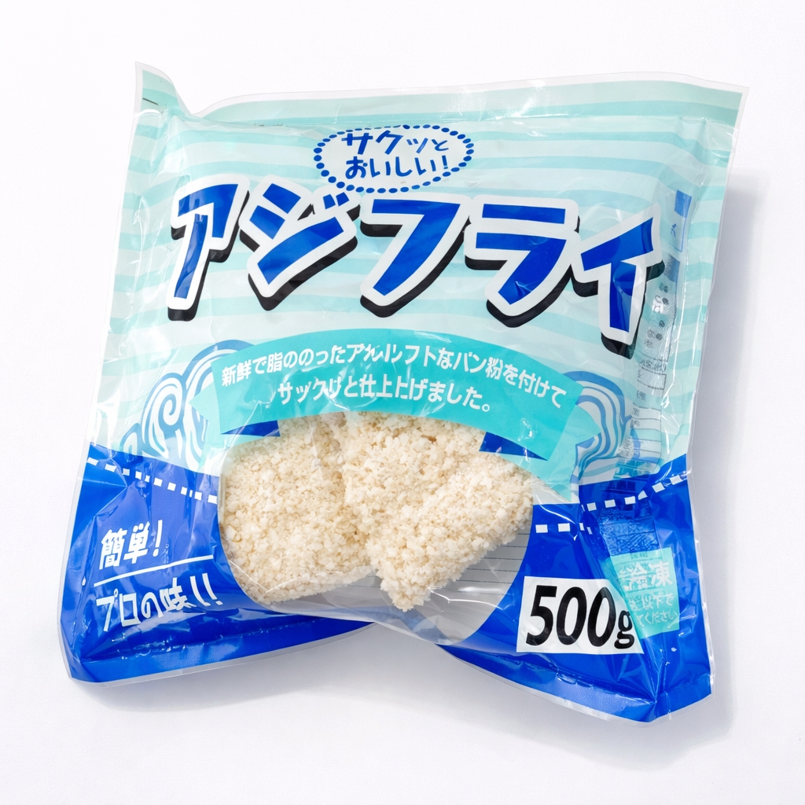

SCENE 01
J003

j 海鮮・魚介類
アジフライ
【揚げるだけ！今夜のおかずは、サクサク熱々の肉厚アジフライ。】
- 内容量500ｇ（50ｇ×10枚）
- 保存冷凍
- 産地中国
商品の特徴を読む
今日の夕食、何にしよう？そんな日に冷凍庫にあると嬉しい、本格アジフライはいかがでしょうか。黄金色のサクサク衣をまとった、肉厚でふっくらとしたアジの身。一口食べれば、アジ本来の旨みがじゅわっと口の中に広がります。面倒な下ごしらえは一切不要。凍ったまま170〜180℃の油で揚げるだけで、いつでも揚げたての美味しさをお楽しみいただけます。たっぷり10枚入りなので、ご家族の食卓のメインディッシュはもちろん、お弁当のおかずやお酒のおつまみ、カレーのトッピングなど、様々なシーンで大活躍。このアジフライが、あなたのおうちごはんをもっと豊かに、もっと楽しくするお手伝いをします。熱々サクサクの美味しさを、ぜひご家庭でご堪能ください。
公式サイトへ移動します。価格・在庫・配送条件は移動先で最終確認してください。
SCENE 02
一口食べれば、アジ本来の旨みがじゅわっと口の中に広がります。
SCENE 03
たっぷり10枚入りなので、ご家族の食卓のメインディッシュはもちろん、お弁当のおかずやお酒のおつまみ、カレーのトッピングなど、様々なシーンで大活躍。
PRODUCT INFORMATION
購入前に確認したい商品情報
- 商品名
- アジフライ
- 商品規格
- 500ｇ（50ｇ×10枚）
- 保存方法
- 冷凍
- 原産国
- 中国
- 製造地
- 中国
- 賞味期限
- 発送日より3ヶ月
原材料
あじ、衣（パン粉、小麦粉、小麦でん粉、食塩）、増粘剤（グァーガム）、調味料（アミノ酸）、乳化剤（一部に小麦・大豆を含む）
FAQ
購入前のよくあるご質問
美味しく揚げるコツはありますか？
170〜180℃に熱したたっぷりの油で、凍ったまま片面約3〜4分ずつ、きつね色になるまで揚げてください。一度にたくさん入れると油の温度が下がりますので、2〜3枚ずつ揚げるのがおすすめです。
おすすめの食べ方を教えてください。
定番のソースやタルタルソースはもちろん、大根おろしとポン酢であっさり和風に、またカレーのトッピングやパンに挟んでアジフライサンドにするのもおすすめです。
MEAT PLUS OFFICIAL SHOP
【揚げるだけ！今夜のおかずは、サクサク熱々の肉厚アジフライ。】
仕入れ・加工・梱包・発送まで自社で行うMEAT PLUSの公式オンラインショップでご注文いただけます。
公式オンラインショップで購入する